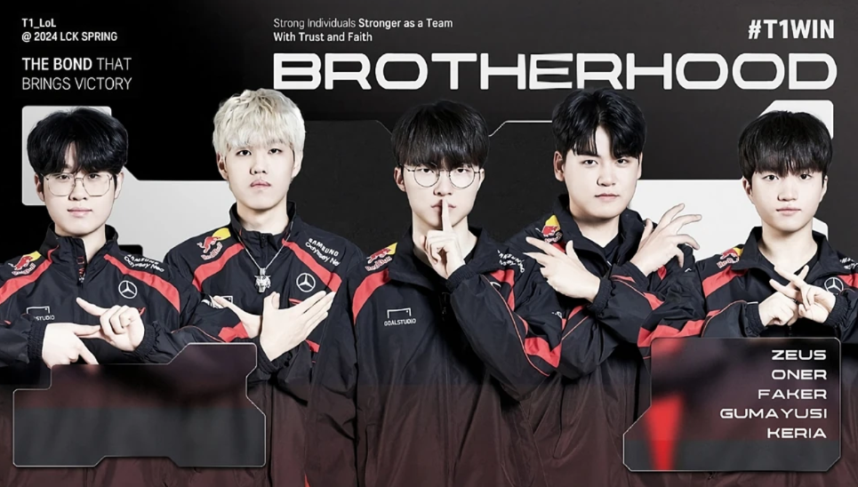
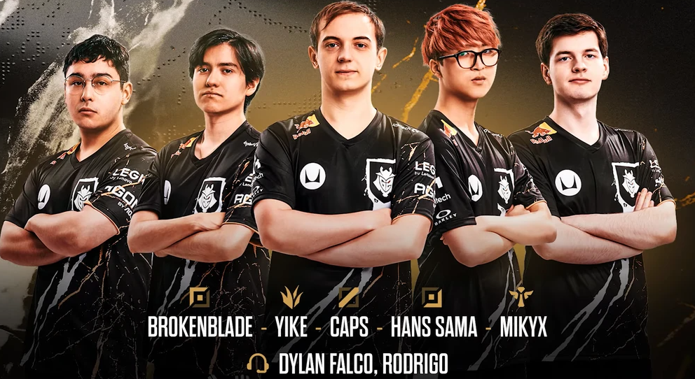
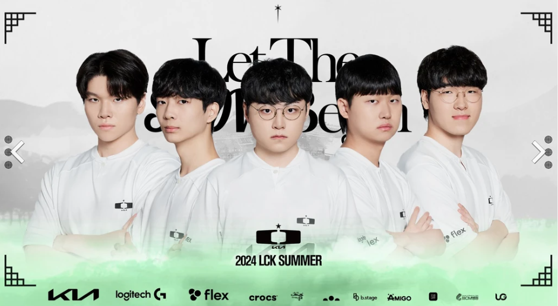
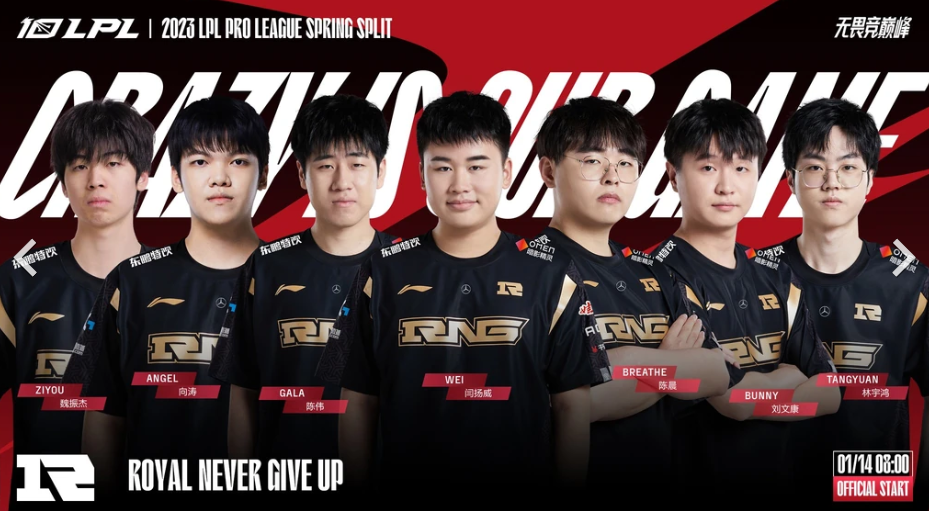
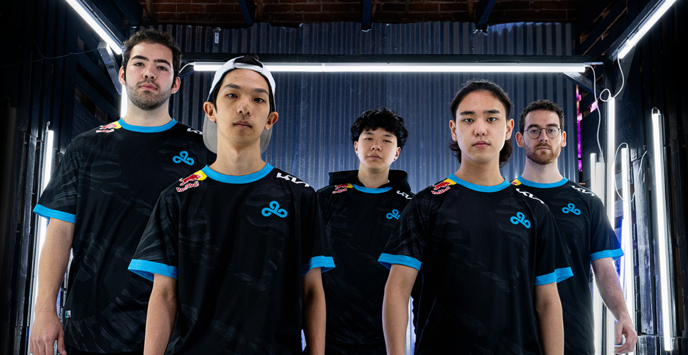

League of Legends, jeden z najpopularniejszych tytułów esportowych na świecie, posiada liczne drużyny, które zdobyły serca fanów na całym globie. Oto przegląd najpopularniejszych drużyn esportowych w tej grze oraz ich kluczowych graczy, którzy zdominowali scenę w 2024 roku.
1. T1 (Korea)

T1 to jedna z najbardziej znanych i utytułowanych drużyn w historii League of Legends. Znana wcześniej jako SK Telecom T1, ta koreańska drużyna zdobyła kilka tytułów mistrza świata.
- Faker (Lee Sang-hyeok) - Jeden z najbardziej legendarnych graczy w historii League of Legends, trzykrotny mistrz świata.
- Gumayusi (Lee Min-hyeong) - Utalentowany AD Carry, który szybko zyskał uznanie za swoje umiejętności i skuteczność w grze.
- Keria (Ryu Min-seok) - Wspierający gracz, znany z doskonałych umiejętności kontrolowania mapy i wspierania drużyny.
2. G2 Esports (Europa)

G2 Esports to jedna z najbardziej rozpoznawalnych drużyn w Europie, słynąca ze swojej kreatywności i niesamowitych powrotów w meczach.
- Caps (Rasmus Winther) - Środkowy gracz, znany z niesamowitej wszechstronności i zdolności do gry na najwyższym poziomie pod presją.
- Yike (Martin Sundelin) - Dżungler, uznawany za jednego z najlepszych graczy na swojej pozycji w historii europejskiego League of Legends.
- Hans Sama (Steven Liv) - AD Carry, który dołączył do G2 w 2024 roku i szybko stał się kluczowym elementem zespołu.
3. DAMWON Gaming (Korea)

DAMWON Gaming, znany również jako DWG KIA, zdobył Mistrzostwo Świata w 2020 roku i od tego czasu pozostaje jednym z najsilniejszych zespołów w Korei.
- ShowMaker (Heo Su) - Środkowy gracz, uznawany za jednego z najlepszych na świecie dzięki swoim niesamowitym umiejętnościom i zdolności do prowadzenia drużyny.
- Canyon (Kim Geon-bu) - Jeden z najlepszych dżunglerów na świecie, znany z doskonałego zrozumienia gry i umiejętności podejmowania decyzji.
- deokdam (Seo Dae-gil) - AD Carry, który dołączył do DAMWON Gaming, wnosi ze sobą świetne umiejętności mechaniczne i zrozumienie gry.
4. Royal Never Give Up (Chiny)

Royal Never Give Up, znane jako RNG, to jedna z najbardziej utytułowanych drużyn w Chinach, znana z agresywnego stylu gry i wybitnych graczy.
- Xiaohu (Li Yuan-Hao) - Wszechstronny gracz, który może grać na kilku pozycjach, znany ze swojej elastyczności i doświadczenia.
- Wei (Yan Yang-Wei) - Dżungler, który wnosi do drużyny agresywną grę i świetne zrozumienie mechanik gry.
- GALA (Chen Wei) - AD Carry, który zasłynął ze swoich mechanicznych umiejętności i zdolności do wygrywania kluczowych walk drużynowych.
5. Cloud9 (Ameryka Północna)

Cloud9 to jedna z najbardziej rozpoznawalnych drużyn w Ameryce Północnej, znana z konsekwentnych występów na międzynarodowej scenie.
- Fudge (Ibrahim Allami) - Górny, znany z solidnej gry i zdolności do wygrywania linii.
- Berserker (Kim Min-cheol) - AD Carry, który szybko stał się jednym z najlepszych strzelców w regionie.
- Zven (Jesper Svenningsen) - Wspierający, wcześniej AD Carry, który przeszedł na nową pozycję, pokazując niesamowitą wszechstronność.